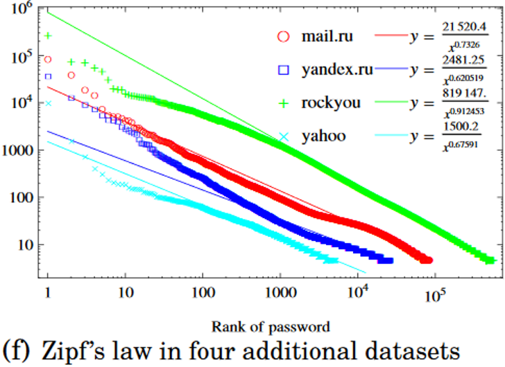

How to use hash functions to design message commitments
Design goals when constructing foundational crypto primitives
Specific hash functions that are designed to protect passwords
Review from last lecture
A cryptographic hash function\(H: \{0, 1\}^* \to \{0, 1\}^n\)
is efficiently-computable
inputs a bytestring of arbitrary length
outputs a bytestring with a fixed number of bits \(n\)
It satisfies the following security requirements (and more):
Preimage resistance, aka one-wayness: if we sample \(y \gets \{0, 1\}^n\) uniformly at random from the set of all bytestrings of length \(n\), then it is practically infeasible for Mallory to find any preimage \(x\) such that \(H(x) = y\).
Collision resistance: it is practically infeasible for Mallory to find two different inputs \(x\) and \(x'\) such that \(H(x) = H(x')\).
Due to the birthday problem, there is an upper bound on how strong a hash function can be. For a hash function \(H: \{0, 1\}^* \to \{0, 1\}^n\) whose output is \(n\) bits long, the best we can hope for is that:
Breaking one-wayness takes around \(2^n\) time.
Breaking collision resistance takes around \(\sqrt{2^n} = 2^{n/2}\) time.
One application of hash functions is to improve integrity of file outsourcing. Suppose Alice wants to store a large, important file \(f\) on a cloud service like Dropbox or Google Drive. Then she can:
Compute the hash \(h = \texttt{SHA256}(f)\) of the file before uploading it to the cloud.
Re-compute the hash every time she downloads the file, and compare it to \(h\) to ensure the file contents have not been tampered.
Due to collision resistance, even if the malicious adversary Mallory is running the cloud provider, she cannot find a new file \(f^{*}\) that is different from Alice’s original file \(f\) and yet still hashes to the same string \(h\).
A Merkle tree allows Alice to upload a set of files and save only one hash digest.
An honest cloud provider can prove that any retrieved file is contained within the set
Thanks to collision resistance, Alice can detect if a malicious cloud provider tampered with her data
Interactive question. Suppose that Alice creates a Merkle tree of a set \(S\) of \(n\) elements, and then only saves the Merkle root.
How many nodes of the Merkle tree does the cloud provider need to send in order to convince Alice that a particular element is contained in the set \(S\)?
\(O(1)\), i.e., a constant that is independent of \(n\)
\(O(\log n)\), i.e., logarithmic in \(n\)
\(O(n)\), i.e., linear in \(n\)
\(O(n^2)\), i.e., quadratic in \(n\)
Answer. The proof contains the digests of all siblings along the path from the leaf to the root of the binary tree. This path is of length \(O(\log n)\).
Alice claims to Bob that she can predict the outcome of the upcoming election
Specifically, she has an image file \(m\) on her computer containing a picture of her claimed winner
Alice and Bob would like to make a $1 bet that she knows the correct answer
However, Alice does not want to reveal \(m\) to Bob right now
Instead, Alice would like to make the bet now, and then reveal her answer after the 2008 election
Let’s design a way to make this bet that:
Convinces Alice that Bob will not learn \(m\) yet
Convinces Bob in November 2008 that Alice knew \(m\) all along and never changed it
In the physical world, we can solve this question with envelopes or playing cards:
Alice can place her written prediction in an envelope, and place it between Alice and Bob
After the election, they can open the envelope together
In the digital world, here is an idea to solve this problem using cryptographic hash functions.
In 2007, Alice can take a hash \(d = H(m)\) of the predicted winner’s image file \(m\) and send it to Bob
After the 2008 election, Bob can take the hash of the actual winner’s image file \(m'\) and see if it equals \(d\).
Interactive question. Does this algorithm work?
Yes
No
Answer. No. This algorithm satisfies Bob’s integrity requirement, but not Alice’s confidentiality requirement.
Intuitively, the construction is appealing because \(H\) is deterministic (so hashing the same file twice will produce the same answer) and preimage resistant (so it should not be possible for Bob in 2007 to compute a pre-image of \(d\))
But preimage resistance only holds for a uniformly random digest \(d\), not when \(d\) corresponds to one of a small number of images!
Defining commitments
Instead, a message commitment protocol is the appropriate cryptographic tool to solve this problem.
Commitments are a digital analog to putting a written message inside of an envelope and placing it on the table. Everyone knows that the message is inside of the envelope, but nobody can read the message until the envelope is opened.
Definition 3.1 (Message commitment) A commitment protocol contains two operations.
Commit\((m, r)\): given a message \(m\) and some randomness \(r\), construct a commitment \(c\).
Open\((c, m, r)\): given the commitment \(c\) and the inputs used to create it, this algorithm should convince the receiver that \(m\) is the correct message contained inside of the commitment.
These algorithms satisfy two security requirements: binding and hiding.
Let’s precisely specify the two security properties of message commitment protocols — and also, of envelopes. To do so, we introduce our malicious adversary Mallory in place of either Alice or Bob.
Binding: after the Commit step, it is infeasible for a malicious committer to be able to Open the commitment to two different messages \(m_1\) and \(m_2\) and have the receiver be convinced by both of them.
Mallory
Bob
\(\quad \overset{c}{\longrightarrow} \quad\)
Hiding: after the Commit step, it is infeasible for a malicious receiver to learn anything about the message \(m\) before the Open step. (That is: the receiver cannot learn the entire message \(m\), or not even the first half of \(m\), or not even the first bit with more than a 50/50 guess.)
Alice
Mallory
\(\overset{c}{\longrightarrow}\)
Hash functions provide the binding property thanks to collision resistance. But on their own, they do not provide hiding.
Constructing commitments
There is a simple way to use cryptographic hash functions in order to build a commitment protocol that is both hiding and binding.
Commit\((m, r)\): produce the commitment \(c = H(m, r)\). In words, hash the message along with a random string that has nothing to do with the message.
Open\((c, m, r)\): reveal everything, and let the receiver check for themselves whether \(c \overset{?}{=} H(m, r)\).
Interactive question. For this commitment scheme to be binding, what is the minimum security requirement that the hash function \(H\) must satisfy?
Preimage resistance
Collision resistance
Puzzle friendliness
Random oracle
Theorem 3.1 If \(H\) acts like a random oracle, then this construction is a secure message commitment protocol.
By “secure,” I mean that this construction satisfies both of our security requirements:
Binding holds directly from the collision resistance of \(H\).
Hiding holds due to Bob’s unawareness of the randomness \(r\). Since he does not know \(r\), he cannot do a brute-force attack of all images to see which one hashes to the value \(c\). Since \(H\) acts as a random oracle, the value \(H(m, r)\) is independent from the other values that Bob did query.
Later in the semester, we will see other constructions and applications of message commitments.
3.2 Constructing crypto primitives
Hash functions sound great. Let’s create one!
“Don’t roll your own crypto.”
– (Every cryptographer)
Okay, let’s study a standard cryptographic hash function and formally prove that it is secure.
Proposition 3.1 (???) The sha256 hash function satisfies preimage resistance and collision resistance.
Proof. Sadly, cryptographers do not know how to formally prove this statement. It is related to unsolved challenges in computer science such as the P vs. NP problem.
Let’s take a step back and talk about how cryptographers design strong hash functions.
The good news: I will show you specific, public functions that the crypto community believes satisfy one-wayness and collision resistance
The bad news: I cannot mathematically and analytically prove to you that any cryptographic hash function actually meets the definition of one-wayness or collision resistance
So instead: we evaluate hash functions empirically, based on how well they hold up against the worldwide cryptanalysis community.
Informally, any possible instantiation of any low-level cryptographic primitive like hash functions must satisfy three properties:
Simple: It must be implementable in a small number of lines of code, and run quickly on modern computers (e.g., billions of times per second).
Makes no sense: It survives the gauntlet of cryptanalysis attempts by the crypto community over many years.
Simple to see why it makes no sense: There is some mathematical reason to believe that nobody will come up with a clever cryptanalysis algorithm tomorrow, in order to adhere to Schneier’s law.
In particular, we do not rely on security by obscurity – that is, simply making the code of a hash function so complicated that nobody can understand it.
Instead, we want the hash function to be hard to break even by people who understand exactly what it is doing.
In more detail, all cryptographic primitives must satisfy Kerckhoffs’s principle.
The system must be practically, if not mathematically, indecipherable;
It should not require secrecy, and it should not be a problem if it falls into enemy hands;
It must be possible to communicate and remember the key without using written notes, and correspondents must be able to change or modify it at will;
It must be applicable to telegraph communications;
It must be portable, and should not require several persons to handle or operate;
Lastly, given the circumstances in which it is to be used, the system must be easy to use and should not be stressful to use or require its users to know and comply with a long list of rules.
[Source: Auguste Kerckhoffs, La Cryptographie Militaire, 1883 (more details available on Wikipedia)]
Interactive question. Which one of Kerckhoffs’ principles is not relevant to the design of cryptographic hash functions?
It should be practically infeasible for Mallory to break
The algorithm’s code should be public to everyone, including Mallory
If Alice loses her key, then she should be able to change it
It must be simple and fast for Alice to use
3.3 Hash function standards
The U.S. National Institute of Standards and Technology (NIST) develops standards for all cryptographic building blocks: hash functions, digital signatures, encryption schemes, and more.
Officially, these standards are only required for use within the U.S. federal government
Unofficially, their standards are often used in commercial applications around the world
To date, NIST has developed three standards for hash functions (and also subsequently revoked one of them). These algorithms are called the Secure Hash Algorithms, or SHA for short. There have been three iterations of hash functions: SHA-1, SHA-2, and SHA-3.
SHA-1
SHA-1 was initially developed in 1995 by the U.S. National Security Agency. It had an output length of \(n = 160\) bits, so by the birthday bound at best we can hope that it takes \(2^{80}\) time to find a collision.
“\(2^{80}\) security is interesting. \(2^{128}\) security is boring.”
– Prof. Dan Bernstein (UIC)
But through a combination of incredibly clever math to design a more clever collision-finding algorithm that runs in only \(2^{63}\) time, and a lot of computing power to execute it, cryptanalysts have broken SHA-1 and you should never use it!
Example. Here are two PDF files (source: shattered.io).
good.pdf
bad.pdf
It turns out that they have the same hash digest using SHA-1. This is proof that SHA-1 does not satisfy collision resistance.
from hashlib import sha1# read the contents of two files: good.pdf (a check mark) and bad.pdf (an X)withopen('images/good.pdf', 'rb') asfile: good =file.read()withopen('images/bad.pdf', 'rb') asfile: bad =file.read()# verify that the strings are differentassert(good != bad)# outputs are 40 hex characters, or 160 bits in lengthhashGood = sha1(good).hexdigest()hashBad = sha1(bad).hexdigest()# observe that the hash function outputs are the sameprint(hashGood)print(hashBad)assert(hashGood == hashBad)
It is safe to use NIST’s other two hash function standards, called SHA-2 and SHA-3.
SHA-2 was initially developed in 2001, also by the U.S. National Security Agency.
It offers a choice of four possible output lengths: 224, 256, 384, or 512 bits
It is the most popular hash function algorithm today, with SHA-256 being the most common choice
SHA-3 was standardized in 2015 after a multi-year open competition.
It is intentionally designed in a fundamentally different way than SHA-2
NIST’s objective was to have a “fallback” plan in case someone finds a collision in SHA-2
To the best of our collective knowledge as a crypto community, both of these hash functions are secure, meaning that no known attacks work substantially faster than brute-force attacks.
The best known algorithms to break preimage resistance require about \(2^n\) work
The best known algorithms to break collision resistance require about \(2^{n/2}\) work
The choices of \(n\) are large enough that this work is computationally infeasible
Comparing crypto primitives used in google.com and bu.edu in 2017
3.4 SHA-2’s Merkle-Damgård design
Let me provide some general advice for this course and beyond.
If someone asks you to solve a difficult problem, try to decompose it into a collection of easier problems.
The design of SHA-2 follows this advice. It decomposes the task of building a hash function into two sub-problems.
Build a compression function\(C\) whose input is of fixed size (say double the output length) and that satisfies collision resistance
Build a mode of operation that iterates this function multiple times in a smart manner
The mode of operation used in SHA-2 is called the Merkle-Damgård transform.
The hash function internally runs \(C\) many times, each time ingesting a new block of input together with the “running hash so far” computed from the prior inputs
Since the first block has no “running hash,” it uses a fixed constant defined in the SHA-2 spec called an initialization vector or IV
The Merkle-Damgård transform is secure, but has some subtle issues involving padding and length extension that must be carefully handled to ensure that they do not cause collisions.
3.5 SHA-3’s sponge function design
Now let’s look at the design of the newest NIST standard: SHA-3. It was the result of an open competition from 2007 to 2012.
NIST expects the SHA–3 algorithm of message digest size \(n\) to meet the following security requirements at a minimum. These requirements are believed to be satisfiable by fairly standard hash algorithm constructions; any result that shows that the candidate algorithm does not meet these requirements will be considered to be a serious attack.
Collision resistance of approximately \(n/2\) bits
The winning algorithm, called Keccak, was created by Guido Bertoni, Joan Daemen, Michaël Peeters, and Gilles Van Assche. Here is why NIST chose Keccak to be the SHA-3 standard, in their words:
“Offers acceptable performance in software, and excellent performance in hardware”
“Has a large security margin, suggesting a good chance of surviving without a practical attack during its working lifetime”
“A fundamentally new and different algorithm that is entirely unrelated to the SHA-2 algorithms”
The notion of security margins is also related to Schneier’s law.
The design of SHA-3 contains two main components.
Fixed-length permutation: a deterministic permutation \(f\), which is carefully designed to act like a truly random function with a fixed input/output length of \(b = 1600\) bits
An iterative way to make many calls to the \(f\) function in order to process each chunk of a variable-length input
The algorithm used by SHA-3 is called a sponge function design. It first absorbs an arbitrary-length input and then squeezes an output.
At any given time, the state of the sponge function is split into two parts.
The first \(r\) bits are called the rate. This part gets XORed with a new block of the message. (The XOR function works as follows: if two bits are equal then their XOR is 0, otherwise it is 1.)
The remaining \(c\) bits are called the capacity. This part determines the security of the sponge function, up to a birthday bound attack (i.e., about \(2^{c/2}\) work) is required to break it.
The entire state is used as the input to the \(f\) function.
When used as a cryptographic hash function, SHA-3 is instantiated with a fixed output length of 224, 256, 384, or 512 bits. (The input length is unbounded.)
Note that the message only touches the rate bits of the state
Meanwhile, the capacity bits are only influenced by the \(f\) function itself, and therefore always remain “random-looking”
By a birthday bound argument, two states with random-looking capacity bits are unlikely to collide
Salted hashing
In many applications that use hash functions, it is common to add a nonce to the input. This random, public value is used to:
Ensure that hashes in your application are different than hashes in other applications
Ensure that hashes of data provided by two different people are distinct
Prevent pre-computation of the hashes of popular messages
In hash function lingo, this nonce is typically called a salt.
Have you ever wondered how your computer stores the password to log into itself? It seems like circular logic if:
The computer grants access to anyone sitting in front of it who knows the correct password \(p\).
The computer stores the login password \(p\) so it can check whether you have typed it in correctly.
For this reason:
Computers (and web servers) store a hash of the true password\(h(p)\) rather than the cleartext password.
After you type a password \(p'\), the computer hashes it and compares against the stored hash.
Remember the preimage resistance guarantee provided by cryptographic hash functions: given a random\(y\), it is difficult to find any preimage \(x\) such that \(H(x) = y\).
However, passwords are generated by people. As a result, they are not chosen uniformly at random, and in practice they tend to follow Zipf’s law.
Some passwords are extremely common and guessable, like 123456 or password.
Many passwords are short and brute-forceable.
Some people choose long, strong passwords.

As a result, password hash functions are specifically designed to be slow and resource-consuming.
When executed once by the honest account-holder, a delay even in the 0.1-1 second range is perhaps tolerable.
But for an attacker Mallory who tries to brute-force guess millions or billions of passwords, the delays add up.
Question. How do you make a function deliberately slow, in a way that is impossible to speed up?
SHA-3’s sponge function design provides an elegant way to design a computationally-slow hash function: simply absorb more data – say, millions or billions of bytes of all 0s after the password itself.
Newer password hash functions like scrypt, bcrypt, and argon2 are also designed to require a lot of memory, in an attempt to reduce parallelization using a GPU or dedicated hardware device.
Cryptographic hash functions are safe to use with secrets like passwords because they are designed not to leak any of the input data – not the first bit, or any bit, or any other simple function of the data. This objective is called pseudorandomness, and we will study it next time.


{kind=link}